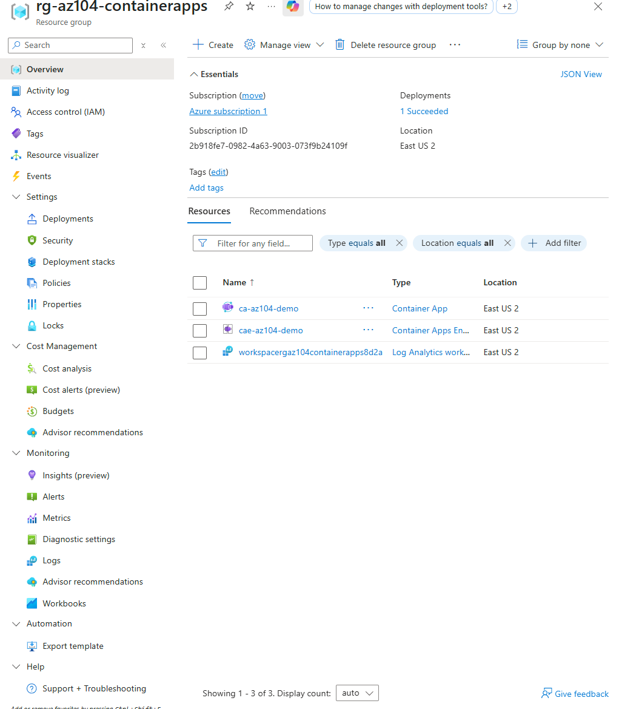
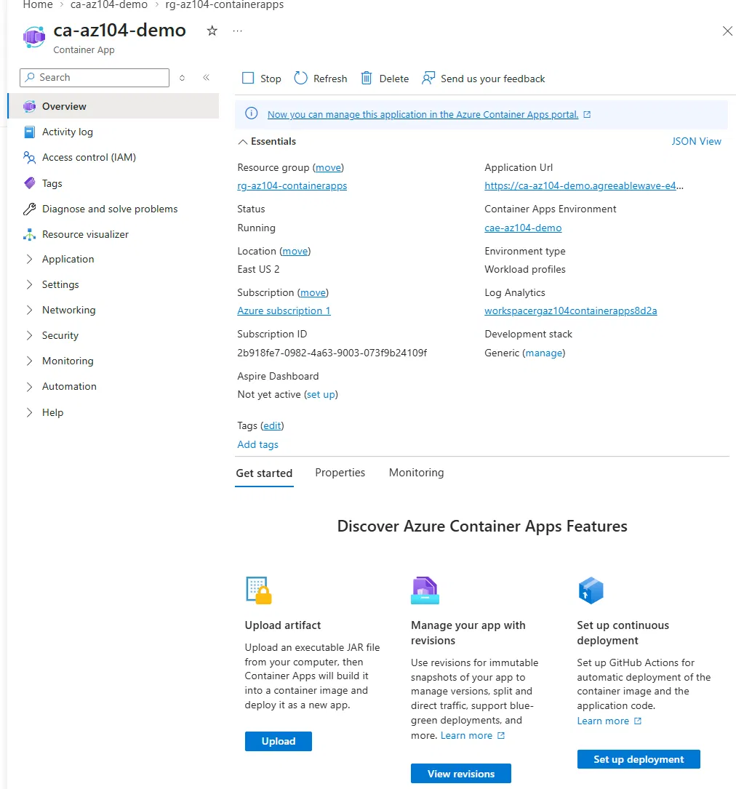
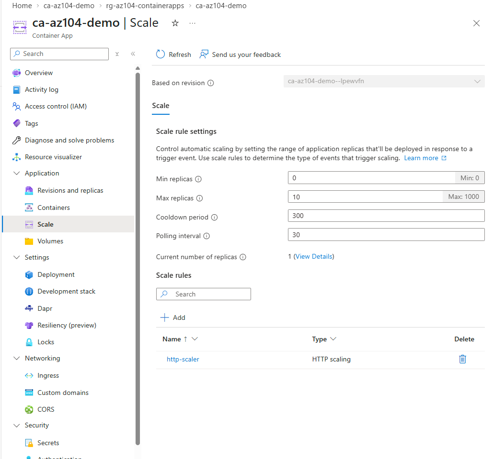
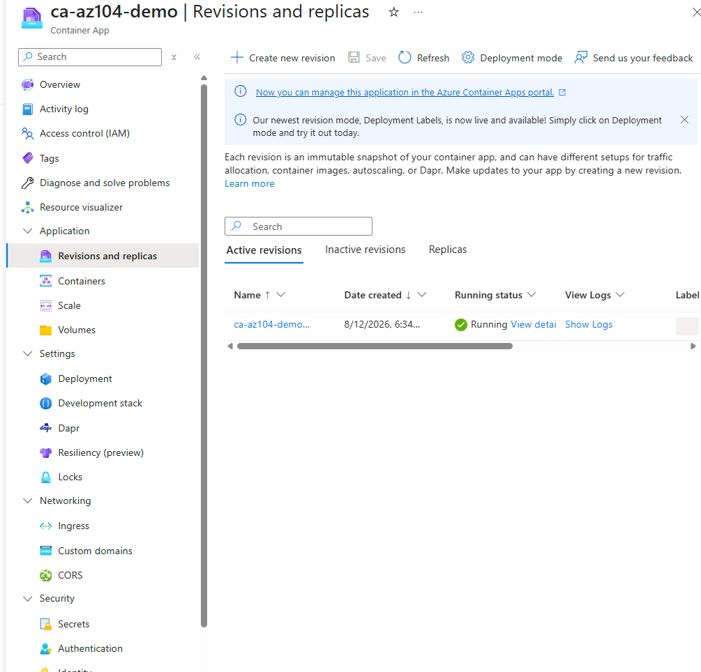

Deployed a public quickstart container image to Azure Container Apps, the last lab in the Compute domain and the point where the domain's story finally closes: VMs, to Availability Sets and Scale Sets, to a fully serverless container platform that scales to zero. Built entirely through the portal wizard, since Container Apps genuinely walks environment and app creation through together in one flow.
Container Apps' portal wizard combines environment creation and app deployment into a single guided flow, which made it a genuinely better first-exposure path than the CLI equivalent, which requires several separate commands and more upfront knowledge of the resource model. The CLI and PowerShell equivalents are documented below and are the intended path for revisiting this lab after the full AZ-104 series is complete.
Using mcr.microsoft.com/azuredocs/containerapps-helloworld:latest kept this lab focused on Container Apps as a compute and scaling platform, rather than turning it into a container registry and image-build lab as well. Azure Container Registry and custom image builds are a natural extension for a later, dedicated lab.
This is the single clearest technical distinction from Lab 3.3's VM Scale Set, which always keeps at least its minimum instance count running and billing. Leaving min replicas at 0 here demonstrates the actual value proposition of serverless containers directly, rather than describing it abstractly: this app can scale down to genuinely zero running compute when idle, something no VM-based option in this domain can do.
Deployed environment and app together through the portal wizard, then verified live traffic, scaling configuration, and revision history.




"If you can build it again tomorrow without looking at yesterday's code, you've learned it. If you need to copy and paste it again, you've only completed a tutorial."
I am learning Infrastructure as Code deliberately, specifically Terraform and Bicep, rather than treating them as copy-paste snippets. This lab was built through the portal, so the code below is the deliberate as-code equivalent of what the wizard did, written to understand the resource model, not copied from a generated template.
Bicep's resource model mirrors what the portal wizard actually created step for step: a Log Analytics workspace, a Container Apps environment tied to it, and the app itself referencing the environment and defining its own scale and ingress rules.